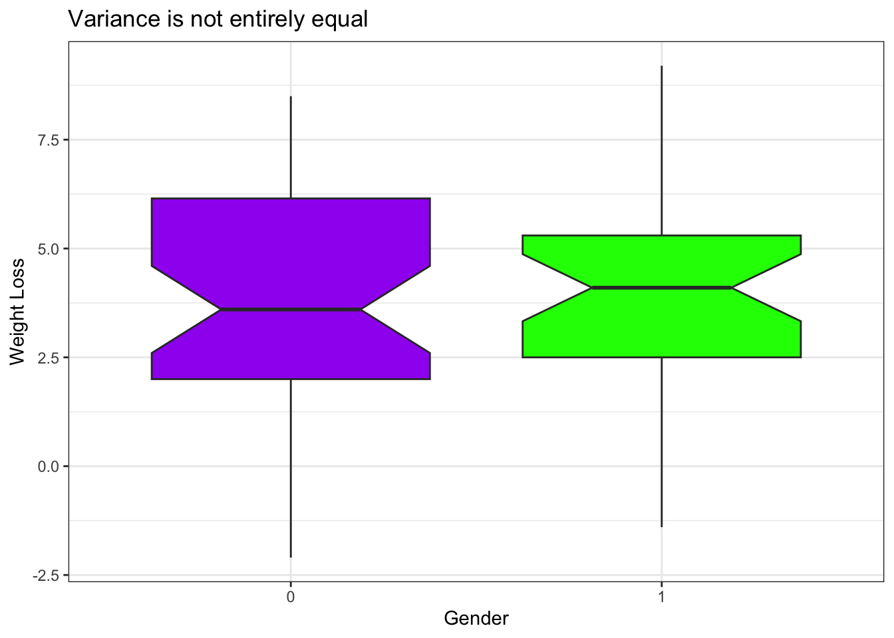
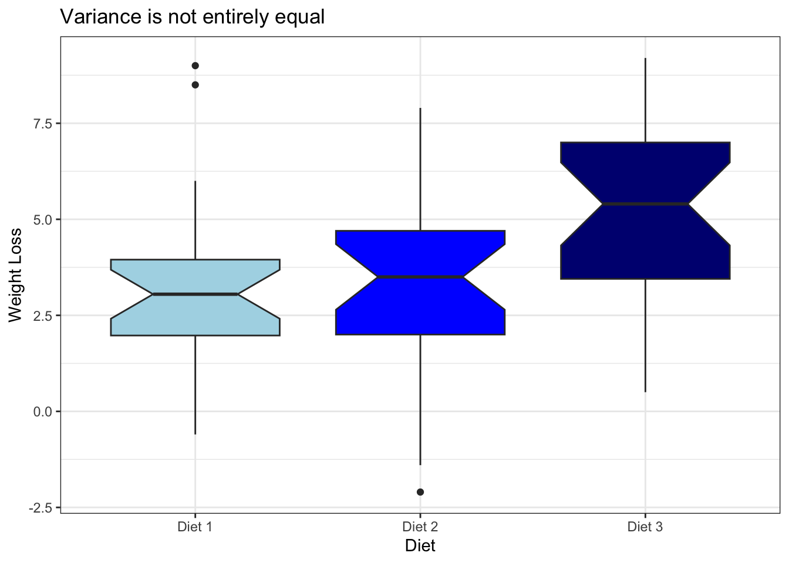
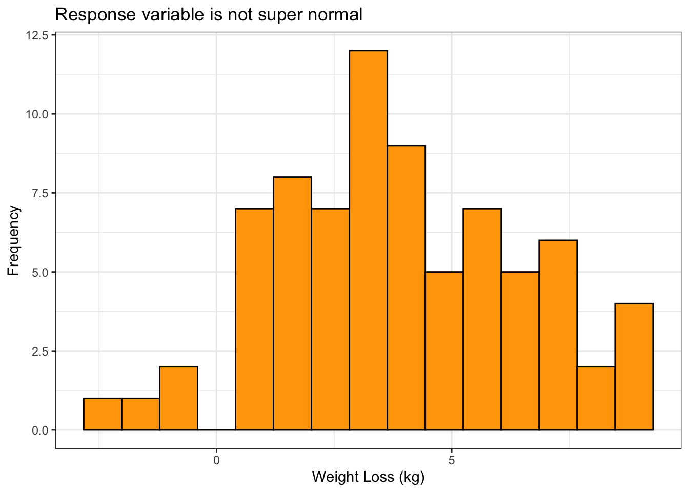

library(tidyverse)
library(knitr)
data <- read_csv("DietData.csv")
data %>%
mutate(weight.delta = pre.weight - weight6weeks) %>%
mutate(Diet = case_when(
Diet == 1 ~ "Diet 1",
Diet == 2 ~ "Diet 2",
Diet == 3 ~ "Diet 3")) -> data
data$gender <- as.factor(data$gender)Analysis of Means Assignment
Abstract
Utilizing analysis of variance to understand the effects of gender and diet on weight loss.
Here is some new data to play with a bit to explore one-way and two-way analysis of variance models. These data represent weight data associated with three different diet types. There are 76 observations of individuals with the following characteristics:
- Gender (0/1)
- Age (earth years. 🤓)
- Height (cm)
- Pre.weight & weight6weeks (kg)
- Diet (1,2,3)
The data are located as a CSV file named DietData.csv linked from the Canvas page. Load the data in and format things so they look correctly to you.
Exploratory Data Anlsysis
One of the first things to do is to look at the data and see if there are any obvious things. Go ahead and explore these data visually. What do you see?
# Response variable: weight loss (difference between pre-weight and weight after 6 weeks in kg)
# Predictor variable: gender (gender 0 or 1)
# Predictor variable: diet (Diet 1, Diet 2, or Diet 3)
ggplot(data, aes(x=gender, y=weight.delta, fill=gender)) +
geom_boxplot(notch = TRUE) +
labs(x = "Gender",
y = "Weight Loss",
title = "Variance is not entirely equal") +
scale_fill_manual(values = c("purple", "green"))+
guides(fill = "none")+
theme_bw()
ggplot(data, aes(x=Diet, y=weight.delta, fill = Diet)) +
geom_boxplot(notch = TRUE) +
labs(x = "Diet",
y = "Weight Loss",
title = "Variance is not entirely equal") +
scale_fill_manual(values = c("lightblue", "blue", "navy")) +
guides(fill = "none") +
theme_bw()
data %>% ggplot(aes(x = weight.delta))+
geom_histogram(bins = 15, fill = "orange", color = "black")+
labs(x = "Weight Loss (kg)",
y = "Frequency",
title = "Response variable is not super normal")+
theme_bw()
Estimating Mean Values
Make a table of Weight Loss by gender and diet.
data %>%
group_by(gender, Diet) %>%
summarize(mean_value = mean(weight.delta, na.rm = TRUE), .groups = "drop") %>%
spread(key = Diet, value = mean_value, fill = NA) -> summary_table
summary_table %>%
kable( caption = "Mean Weight Loss (kg) by Gender and Diet",
digits = 2)| gender | Diet 1 | Diet 2 | Diet 3 |
|---|---|---|---|
| 0 | 3.05 | 2.61 | 5.88 |
| 1 | 3.65 | 4.11 | 4.23 |
1-Way Analysis of Variance
Diet Issues:
The underlying linear model.
\[ y_{ij} = \mu + \tau_{Diet, i} + \epsilon_j \]
Test the null hypothesis, \(H_O:\) There is no effect of diet on weight loss (e.g., \(\tau_{Diet-1} = \tau_{Diet-2} = \tau_{Diet-3} = 0.0\)). Is there evidence for one diet producing more weight loss than the others? Create an aov analysis and assign it to the variable fit.diet and examine its contents.
fit.diet <- aov(weight.delta ~ Diet, data = data)
anova(fit.diet)Analysis of Variance Table
Response: weight.delta
Df Sum Sq Mean Sq F value Pr(>F)
Diet 2 60.53 30.2635 5.3831 0.006596 **
Residuals 73 410.40 5.6219
---
Signif. codes: 0 '***' 0.001 '**' 0.01 '*' 0.05 '.' 0.1 ' ' 1Are they all significantly different? Try the TukeyHSD() Interpret the results.
diet.tukey <- TukeyHSD(fit.diet)
diet.tukey Tukey multiple comparisons of means
95% family-wise confidence level
Fit: aov(formula = weight.delta ~ Diet, data = data)
$Diet
diff lwr upr p adj
Diet 2-Diet 1 -0.032000 -1.6530850 1.589085 0.9987711
Diet 3-Diet 1 1.848148 0.2567422 3.439554 0.0188047
Diet 3-Diet 2 1.880148 0.3056826 3.454614 0.0152020diet.sum <- data %>%
group_by(Diet) %>%
summarise(MEAN = mean(weight.delta),
N = length(weight.delta),
SD = sd(weight.delta),
CI= 1.96 * sd(weight.delta) / sqrt(length(weight.delta)))
diet.sum# A tibble: 3 × 5
Diet MEAN N SD CI
<chr> <dbl> <int> <dbl> <dbl>
1 Diet 1 3.3 24 2.24 0.896
2 Diet 2 3.27 25 2.46 0.966
3 Diet 3 5.15 27 2.40 0.904Based on this ANOVA, I reject the null hypothesis (F = 5.383, DF = 2, p = 0.007) and conclude that the average weight loss of at least one of the diets differs from the overall average weight loss. The mean weight loss with diet 3 (5.148 +/- 0.904) was greater than the mean weight loss with diet 1 (3.300 +/- 0.896) or diet 2 (3.268 +/- 0.966). The post-hoc Tukey test did find significant differences between the mean weight loss of diet 3 and diet 2 (p = 0.152) and diet 1 (p = 0.019). The post-hoc Tukey test did not find a significant difference between the mean weight loss of diet 2 and diet 1 (p = 0.999). These results should be treated with caution. The weight loss of diets 2 and 3 are not entirely symmetrical and the variance of weight loss between the three diets is not entirely equal. In addition, the response variable (weight loss in kg) is only somewhat normal (see exploratory plots above). Despite this, we did achieve a significant result so diet does have some effect on weight loss.
How much of the variation is explained? If you notice when you do a summary from a lm() (regression) model, it gives you the \(R^2\) values directly (remember \(R^2 = \frac{SS_{model}}{SS_{Error}}\)). Does summary() of your aov model give you that?
summary(fit.diet) Df Sum Sq Mean Sq F value Pr(>F)
Diet 2 60.5 30.264 5.383 0.0066 **
Residuals 73 410.4 5.622
---
Signif. codes: 0 '***' 0.001 '**' 0.01 '*' 0.05 '.' 0.1 ' ' 1The summary of the aov model does not provide the \(R^2\) values directly.
Since I asked the question, the answer is probably no. Why does it not do this? Probably for historical reasons, which are a bit of a pain in the backside. That being said, there are some tidy ways to fix this issue. I’m going to use the broom package which allows us to clean up (or tidy if you will) the model objects. This will take the model object and pull out all the ANOVA table stuff and put it into a tibble.
library(broom)
tidy_diet <- tidy(fit.diet)
tidy_diet# A tibble: 2 × 6
term df sumsq meansq statistic p.value
<chr> <dbl> <dbl> <dbl> <dbl> <dbl>
1 Diet 2 60.5 30.3 5.38 0.00660
2 Residuals 73 410. 5.62 NA NA Now, since it is all easily accessible, we can calculate the \(R^2\) from the new model output.
# Estimate the variance explained from the raw sums of squares
r2_Diet <- tidy_diet$sumsq[1] / sum(tidy_diet$sumsq)
r2_Diet [1] 0.1285269Gender:
The underlying linear model.
\(y_{ij} = \mu + \tau_{gender, i} + \epsilon_j\)
Independent of the diet, test the null hypothesis \(H_O:\) There is no difference in weight loss between genders (e.g., ${gender-0} = {gender-2} = 0.0 $). Is there evidence for one gender being significantly different than another? How much of the variation is explained (another \(R^2\) by gender)?
fit.gender <- aov(weight.delta ~ gender, data = data)
anova(fit.gender)Analysis of Variance Table
Response: weight.delta
Df Sum Sq Mean Sq F value Pr(>F)
gender 1 0.28 0.2785 0.0438 0.8348
Residuals 74 470.65 6.3601 gender.sum <- data %>%
group_by(gender) %>%
summarise(MEAN = mean(weight.delta),
N = length(weight.delta),
SD = sd(weight.delta),
CI= 1.96 * sd(weight.delta) / sqrt(length(weight.delta)))
gender.sum# A tibble: 2 × 5
gender MEAN N SD CI
<fct> <dbl> <int> <dbl> <dbl>
1 0 3.89 43 2.52 0.752
2 1 4.02 33 2.53 0.863Based on this ANOVA, I fail to reject the null hypothesis (F = 0.0438, DF = 1, p = 0.835) and conclude that the average weight loss of neither gender is significantly different from the other. The mean weight loss of gender 0 (3.893 +/- 0.752) was lower than the mean weight loss of gender 1 (4.015 +/- 0.863) but as the ANOVA revealed, this difference is not significant. These results should be treated with caution. The weight loss of genders 0 and 1 are not entirely symmetrical and the variance of weight loss between the two genders is not equal. In addition, the response variable (weight loss in kg) is only somewhat normal (see exploratory plots above).
Do genders respond differently to diets?
\(y_{ijk} = \mu + \tau_{Diet,i} + \tau_{gender,j} + \epsilon_k\)
So here we do something a bit different. We want to simultaneously ask the following questions:
- Do diets influence weight loss?
- Do genders influence weight loss?
- Is there an interaction where different genders respond differently to different diets?
In \(R\), this is done as:
anova(fit.diet)Analysis of Variance Table
Response: weight.delta
Df Sum Sq Mean Sq F value Pr(>F)
Diet 2 60.53 30.2635 5.3831 0.006596 **
Residuals 73 410.40 5.6219
---
Signif. codes: 0 '***' 0.001 '**' 0.01 '*' 0.05 '.' 0.1 ' ' 1# gender model
anova(fit.gender)Analysis of Variance Table
Response: weight.delta
Df Sum Sq Mean Sq F value Pr(>F)
gender 1 0.28 0.2785 0.0438 0.8348
Residuals 74 470.65 6.3601 # interaction model
fit.dietgender <- aov(weight.delta ~ Diet*gender, data = data)
anova(fit.dietgender)Analysis of Variance Table
Response: weight.delta
Df Sum Sq Mean Sq F value Pr(>F)
Diet 2 60.53 30.2635 5.6292 0.005408 **
gender 1 0.17 0.1687 0.0314 0.859910
Diet:gender 2 33.90 16.9520 3.1532 0.048842 *
Residuals 70 376.33 5.3761
---
Signif. codes: 0 '***' 0.001 '**' 0.01 '*' 0.05 '.' 0.1 ' ' 1What is the \(R^2\) for this model?
# best model variance (diet alone) explained
tidy_dietgender <- tidy(fit.dietgender)
r2_diet <- tidy_dietgender$sumsq[1] / sum(tidy_dietgender$sumsq)
r2_diet[1] 0.1285269# second best model variance (diet and gender interacting) explained
r2_dietgender <- tidy_dietgender$sumsq[3] / sum(tidy_dietgender$sumsq)
r2_dietgender[1] 0.07199404# total variance explained by this model
r2_total <- (sum(tidy_dietgender$sumsq) - tidy_dietgender$sumsq[4]) / sum(tidy_dietgender$sumsq)
r2_total[1] 0.2008791Which Model is Best?
How would you compare the models you generated? How do you interpret the findings?
Explain, in words, your findings and interpretation of these findings
The total variance explained by diet, gender, and the interaction of the two is 20.088%. Of that total, the results of our ANOVA gave one very significant result showing 12.853% is explained by diet alone. The ANOVA gave another significant result though it is only barely significant - that 7.200% is explained by the interaction of diet and gender. My interpretation of these findings is that diet - particularly whatever was in diet #3 - has an impact on weight loss.